（1）官网地址： https://cn.vuejs.org/
（2）Vue是一个渐进式的JavaScript框架。采用自底向上增量开发的设计。可以简单的理解为Vue是一个不断的去完善浏览器功能特性的前端框架（根据浏览器版本的不同去实现新特性）。
注：
所谓渐进式就是逐步实现新特性的意思 。比如实现了模块化开发、路由、状态管理等新特性。
（3）Vue的核心库只关注视图层（只负责布局，不负责通信，通信由第三方库提供），易于上手，便于与其他项目整合。
注：
Axios是一个前端通信框架，由于Vue只负责视图层，不负责通信，所以可以使用Axios来与服务器进行交互。
ElementUI是一个基于Vue的UI框架。
简单的说：
可以使用 Vue + Axios + ElementUI 来开发前端。
再加个NodeJS写后端（使用Express或者Koa框架），使用NPM（项目综合管理工具，类似于maven）。
（4）Vue 综合了 Angular （模块化）和 React （虚拟DOM）的优点，还可以使用原生JS开发（ES），集合众家之所长。
Angular实现模块化开发，对后端开发人员友好，对前端人员不友好。
React实现虚拟DOM，在内存中模拟DOM操作，提高前端渲染效率，使用起来复杂，需要学习JSX。
（1）MVVM模式指的是 Model - View - ViewModel。其将视图层与业务逻辑层分离开。在MVVM模式中，不允许视图层与数据直接交互，需要通过中间件（ViewModel）来通信。
Model ：模型层，指的是 JavaScript对象。
View ： 视图层，指的是 DOM。
ViewModel ： 连接视图层与数据的中间件，指的是 Vue。
（2）ViewModel工作：（作为一个观察者）
能观察数据的变化，并将视图中对应的部分进行修改。
能监听视图的变化，并通知数据发生改变。
即：
Vue的核心是 DOM监听 与 数据绑定（双向绑定）。
Vue是MVVM模式的实现者，MVVM的核心是ViewModel，而ViewModel是一个观察者。
可以通过js文件的方式来使用vue。
【step1：引入js文件（或者引入下载的js文件）】
<script src="https://cdn.jsdelivr.net/npm/vue@2.5.16/dist/vue.js"></script>
【step2：创建vue对象】
var vm = new Vue({
el: "#test", // el（element）用于指定选择器
data: { // 初始化数据
message: "Hello"
}
});
【step3：双向数据绑定】
v-model
<input type="text" v-model="username"/>
等价于
<input type="text" v-bind:value="username" v-on:input="username= $event.target.value">
【step4：显示数据】
{{XXX}}
【step5：MVVM实现】
model层相当于data
data: {
username : "Jarry"
}
view层相当于div
<div id="test">
<input type="text" v-model="username"/>
<p>Hello {{username}}</p>
</div>
ViewModel相当于Vue实例
var vm = new Vue({})
负责数据间的双向绑定。
【举例：】
<!doctype html>
<html lang="en">
<head>
<meta charset="UTF-8">
<meta name="viewport"
content="width=device-width, user-scalable=no, initial-scale=1.0, maximum-scale=1.0, minimum-scale=1.0">
<meta http-equiv="X-UA-Compatible" content="ie=edge">
<title>Document</title>
</head>
<body>
<div id="test">
<input type="text" v-model="username"/>
<p>Hello {{username}}</p>
</div>
<script src="https://cdn.jsdelivr.net/npm/vue@2.5.16/dist/vue.js"></script>
<script type="text/javascript">
var vm = new Vue({
el: "#test",
data: {
username : "Jarry"
},
});
</script>
</body>
</html>修改文本框的数据时，所有使用的地方均会被修改。
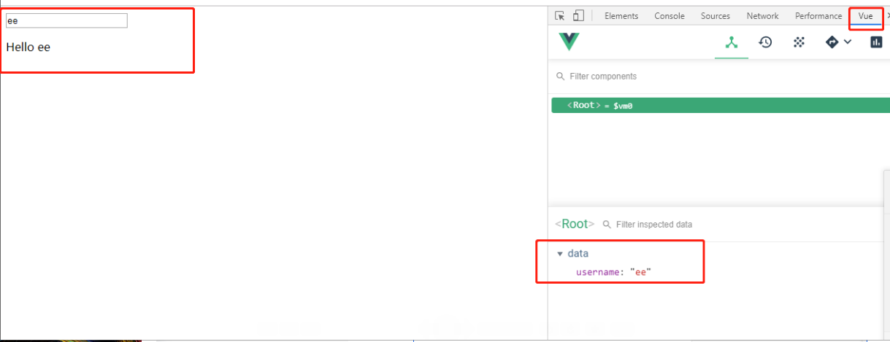
直接解压下面的安装包，并复制到Chrome浏览器中的扩展程序即可。或者通过以下步骤，自己去生成。
（1）插件下载地址： https://github.com/vuejs/vue-devtools
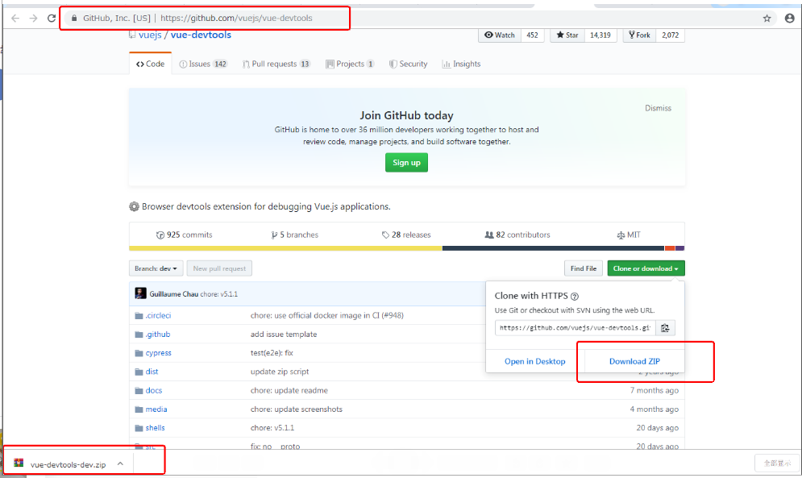
（2）安装npm，需要通过npm下载相关依赖。
地址： http://nodejs.cn/download/
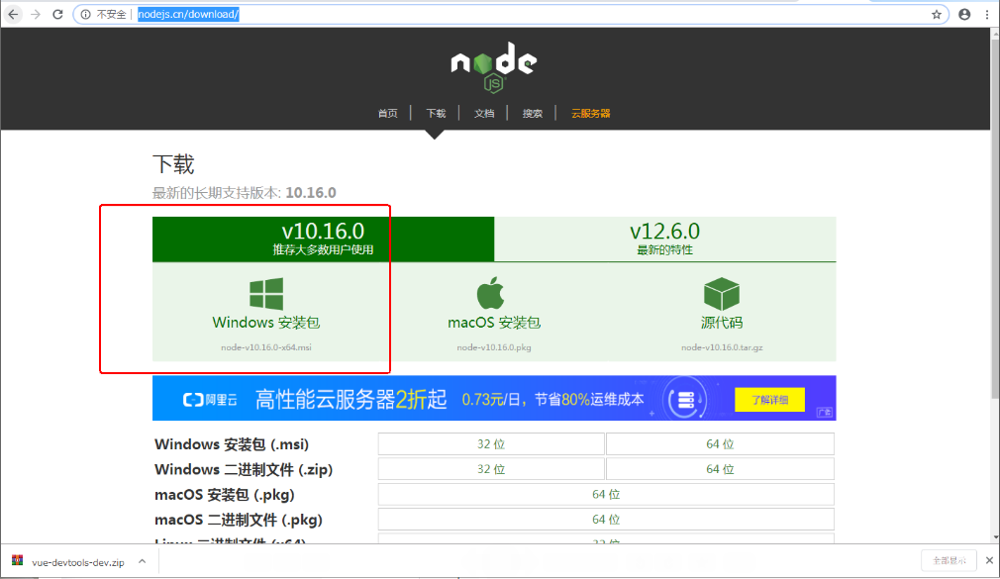
下载完成后，直接傻瓜式安装。
命令行输入
node -v
npm -v
若出现对应的版本号，则表示安装成功。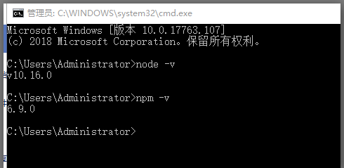
（3）下载cnpm,因为vue插件依赖要通过cnpm下载，
cmd命令如下：
npm install -g cnpm -registry=https://registry.npm.taobao.org
查看cnpm版本
cnpm -v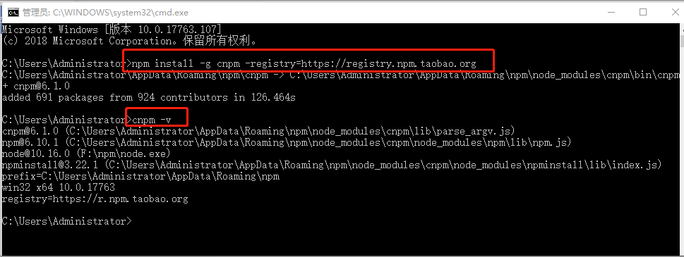
（4）通过cnpm安装vue插件依赖
首先通过命令行进入vue插件的解压路径的子目录下（第一步下载的vue插件）。
此处我保存在F:\vue。
则命令行输入 cd F:\vue\vue-devtools-dev
进入目录后，输入cnpm install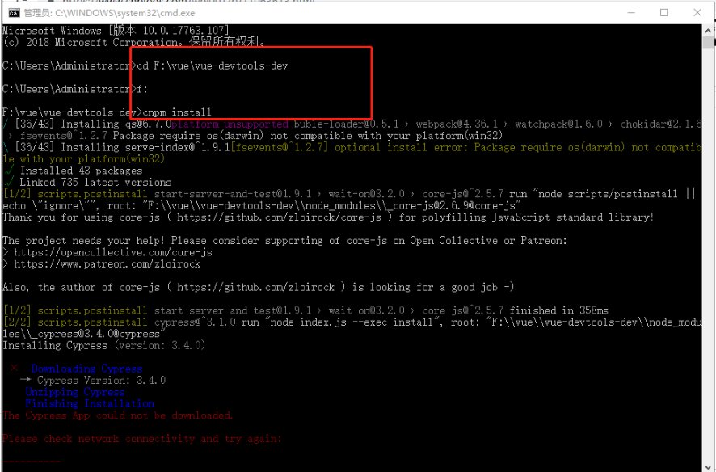
（5）再次输入命令
npm run build
若出现类似下图所示情况，则表示成功。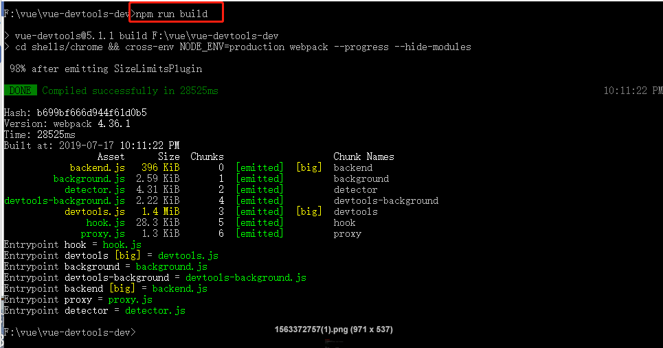
（6）进入F:\vue\vue-devtools-dev\shells\chrome目录，修改manifest.json 里persistent 字段 为true。
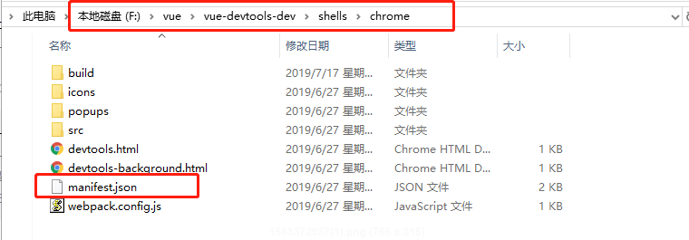
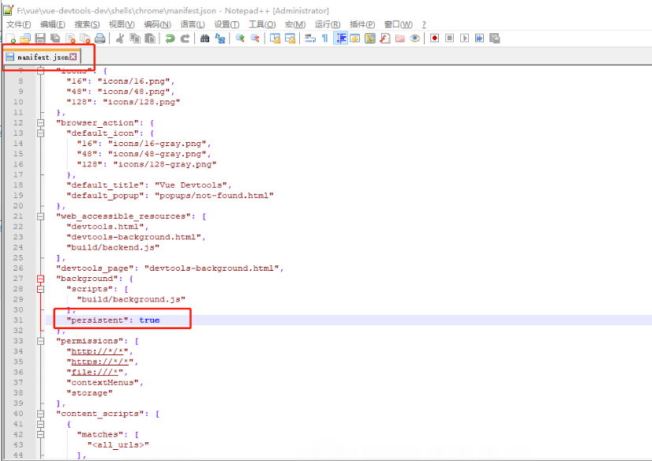
（7）在Chrome浏览器的扩展程序中（chrome://extensions/），选择开发者模式，并将F:\vue\vue-devtools-dev\shells下的chrome文件夹粘贴到扩展程序中。
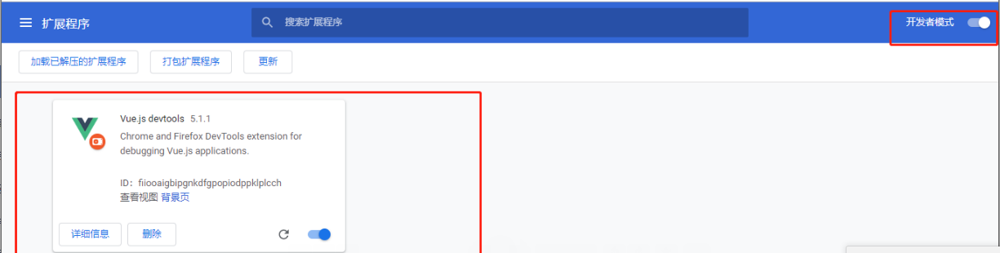
（8）Chrome浏览器中 右键 -》 检查， 或直接按 F12，进入开发者工具，即可看到vue控制台。
注意：
只有vue页面，才能进入该控制台。
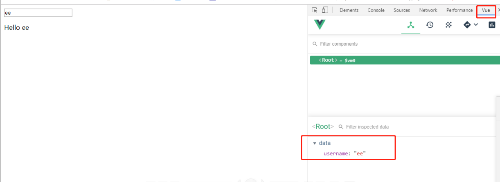
（9）直接解压下面的安装包，并复制到Chrome浏览器中的扩展程序即可。
（1）vue-cli ; 脚手架， 用于自动生成vue.js + webpack 项目模板。
（2）vue-resource ; 用于处理Ajax请求，不被维护，现在使用Axios。
（3）vue-router； 用于处理路由。
（4）vuex ; 用于状态管理。
（5）vue-lazyload; 用于图片懒加载（当网络请求比较慢的时候,提前给这张图片添加一个像素比较低的占位图片，不至于堆叠在一块，或显示大片空白，让用户体验更好一点）。
（6）vue-scroller; 用于页面滑动。
（7）mint-ui; 基于vue的UI组件库（移动端）。
（8）element-ui; 基于vue的UI组件库（PC端）。